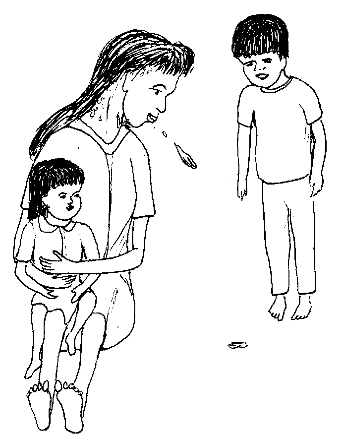
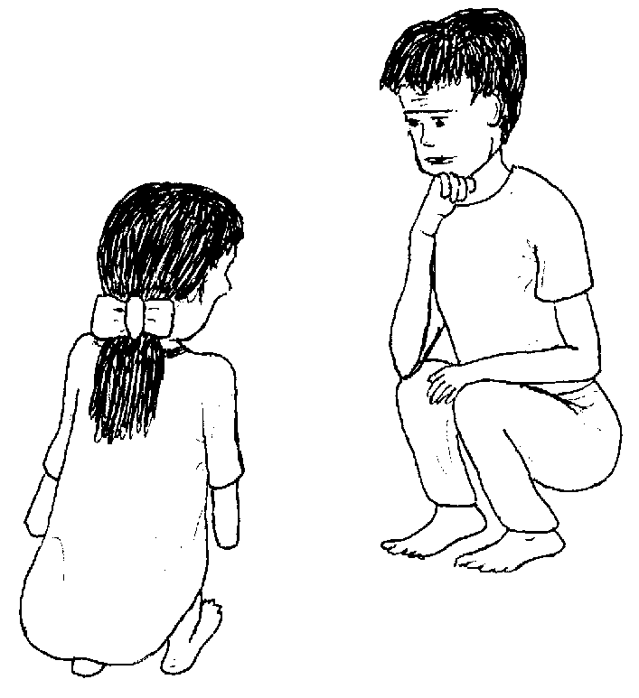
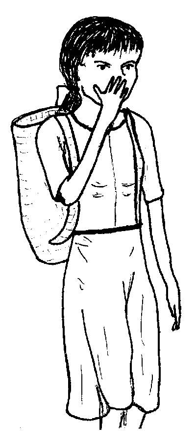
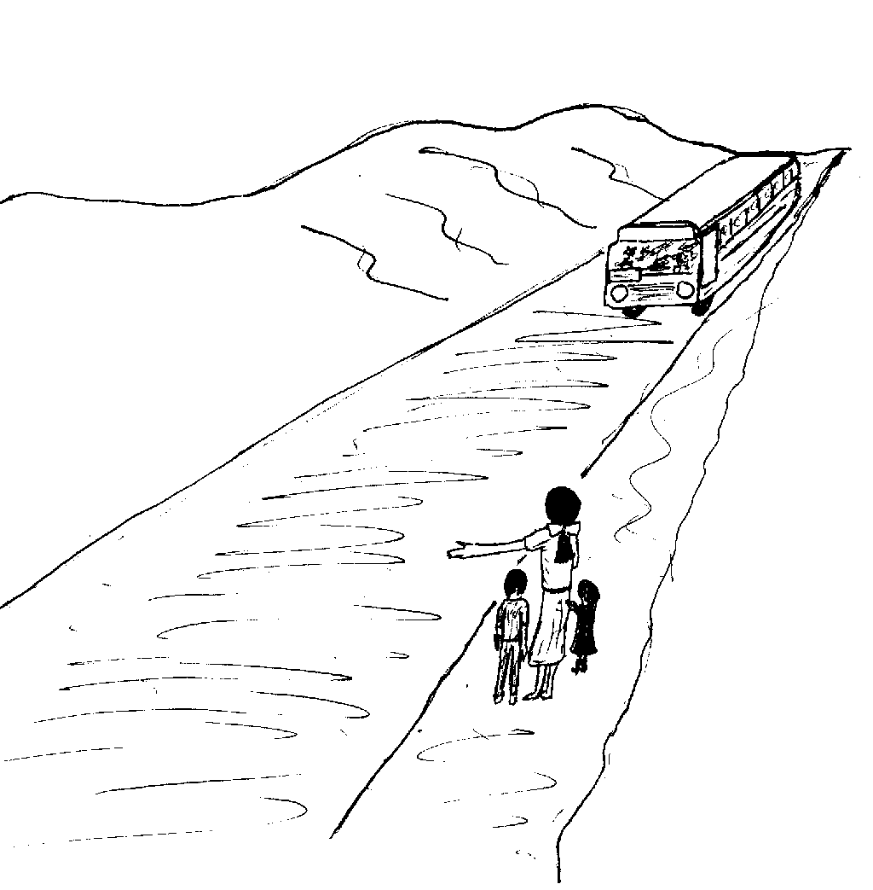
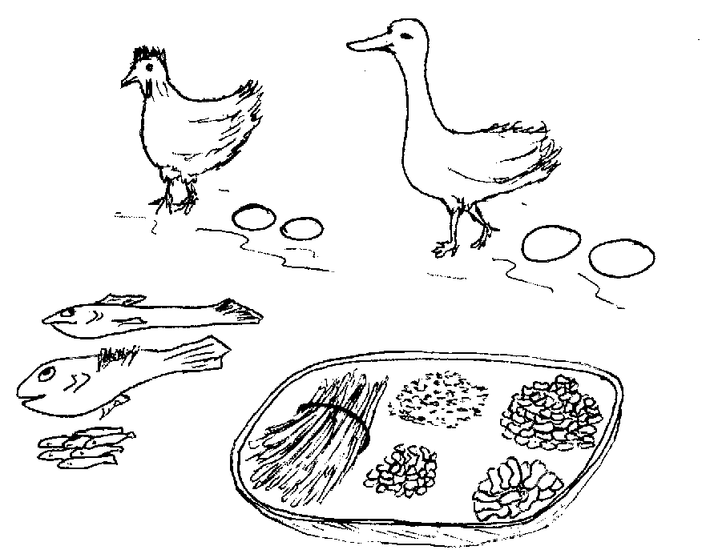
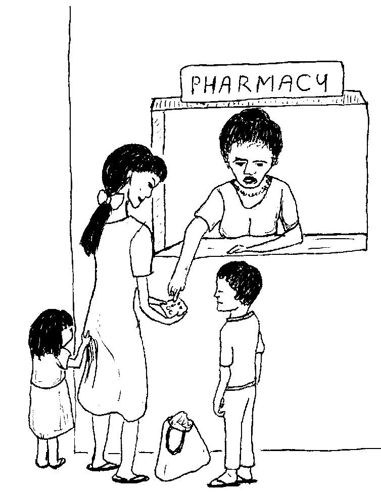
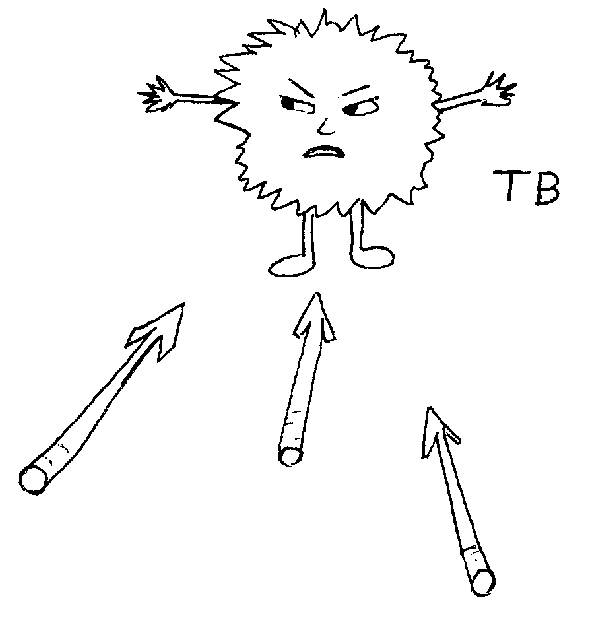
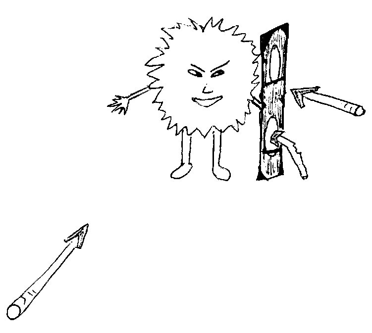
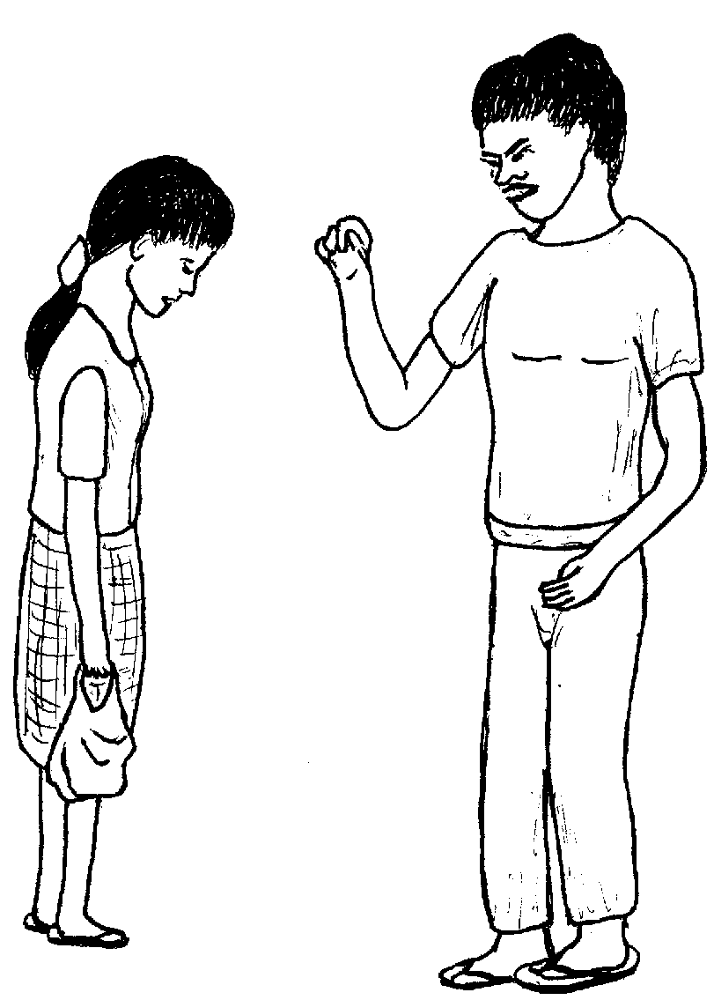

Matigsalug Manobo Healthbooks
Previous Healthbook Up to main Healthbooks page Next Healthbook
Vernacular Lexicon
A
B
BAP
BL
D
E
G
H
I
K
KI
L
LA
LIP
M
N
O
P
PA
R
S
SE
SIN
T
TE
TIN
U
V
W
Y
Z
Healthbooks
Amanan makehal ka buwe ni Mirsi duma te kelab din wey bayew rin e migmahase wey keneg pekeeleg tenged su kene din amana egkeupian neg keen. Wey eglusungan sikandin tagse maapun. Ne emun ke marusilem e, egkasubid-subid din e te limuseng din.
Sabekan maselem te peg-enew rin, nakaheram sikandin te sublan mareet te an-anayan wey migbunsud din e mig-iileb te langesa.

Nalaggew amana si Mirsi su ka asawa rin mig-iileb ded degma te langesa te migderalu rin dengan te tibi. Migsenge tuig e kuntee ka asawa rin ne migpatey tenged te sika ne dalu.
Ne ayunan din te migpakigkita ki Inuk te sabekan Barangay Health Worker.
Mig-insaan ni Inuk si Mirsi ke nekey ka dalu rin.

Amanag kasasew si Inuk ki Mirsi su nakanengneng din te tibi red ka impatey te asawa rin.
Ne nakataha man-e sikandin te mahaan deg galin sikan dalu diyet duma.
Isip ni Inuk ne tibi degma ka dalu ni Mirsi.
Ne mig-inse si Mirsi, “Saatu-pa, egpatey e naa regma iling te asawa ku? Amana a egkalaggew su wareg pakatanggu te me anak ku.”
Ne migkahi si Inuk te, “Kene kag kalaggew su seinin dalu egkabawian ded. Seinin dalu egpuun te kahew neg gendiye te bahe. Egkaayun degma neg empet te lawa.
“Ne keilangan neg inum ka te bawi seled te hen-em ne bulan wey henduen ke pad egkeulii su seini ne kahew, mananey egpatey. Piru minsan bayew kad egkeulii, keilangan ne pabulus ke pa kag inum te bawi.”
Henduen pad nasuman-suman ni Mirsi ka asawa rin ne migpatey te tibi tenged su ware migpabulus ka mig-inum te bawi su migsahe-sahe din su bayew rin egkeulii ka mig-inum te bawi seled te sabekan bulan.
Te ware naluhey, migderalu rin e man-e. Ne minsan migbeli rin e te masulug ne bawi piru migpatey red sikandin.
Ne migkahi si Inuk te, “Keilangan ne sikaniyu langun ka mig-ugpe due ne baley, egpapitew te duktur eyew egkanengnengan niyu ke ware ded kahew ne miggalin diyet duma nu minsan ware eggeramen dan.
“Keilangan neg peinumen buwa regma sikandan te bawi eyew keneg kahalinan sikandan.”
Ne migkahi si Inuk te, “Keilangan neg gendiye ka te huspital eyew egpitawen dan ka kelab nu ke malehet naa ne tibi ka dalu nu.
“Emun ke rue, egbehayan ka nikandan te libri ne bawi eyew egkeulian ka. Piru keilangan neg pabulus ka neg inum te bawi sumale te igkahi te duktur keykew ke ken-u ka egpeengkera kag inum te bawi.”
Ne mig-inse si Mirsi, “Miggalinan e buwa te asawa ku te tibi?”
Ne migtabak si Inuk te, “Uya buwa, su ka kahew te tibi diye mig-ugpe te bahe, ne mahaan deg galin diyet duma, labi e keg ileb wey egbuween ka migderalu te iling due. Egpakaseled diyet duman etew ka kahew taheed teg geheyinawa sikandan, su ka kahew egkeuyan te kalamag.
“Emun keg tibiyen ka, keilangan neg sagpengan nu ka be-be nu keg buween ka. Ne emun keg ileb ka te kelab nu, keilangan ne diye nu te lihawangan te mariyu te duman etew wey ke diye nu naa te lata ig-ileb su eyew igkalebeng nu. Ne keilangan man-e ne iglain ka eggamiten nu ne palatu, silut, wey basu su eyew keneg kahamit te duma.”

Ne migbelegye si Mirsi te manuk dan su igpiliti teg gendiye te huspital. Ne diye te huspital, impitew te duktur ka me kelab te me taltalaanak, piru sikandin de ka due tibi.

Ka pegpanulu te duktur ki Mirsi, iling ded te pegpanulu ni Inuk diyet kandin.
Ingkahiyan man-e sikandin te duktur te minsan hendue teg keulian din e, keilangan neg abey rin pad eg-inum te bawi seled te hen-em ne bulan wey minsan egkaluhey-luhey pad, taman teg keulian din e ne malehet.
Ne migkahiyan e man-e sikandin te duktur te, “Keilangan neg gendini ka man-e su egpitawen tag abayi keg ginguma ka daruwan bulan keg keulian ke naan e. Egbehayan ney man-e sikeykew te iyam ne bawi neg pabulusan nu teg inum.” Migbehayan e te duktur si Mirsi te risibu te ngaran te me bawi ne igpabehey diyet migtameng te me bawi.
Ne migpabulus man-e migkahi ka duktur te, “Keen ka te meupiya neg keenen iling te atelug, isda, meni, wey gulay, ne keilangan neg pangeen degma ka me anak nu due.”

“Himmeley ka taman teg keulian kad wey kene kag pasubla eggimu iling te egpangayu, wey keg gilamun neg kaapunan, keilangan ne malasi kag gimmeley.”
Ne migpabulus man-e sikandin ka migkahi te, “Kene ka egpanihupan wey eg-inum te me tanduway, me tuba.”
Kahi rin man-e, “Mahaan ke re egkeulii keg tumanen nu sika.”
Mig-uyan e ni Mirsi ka risibu diye te migtameng te me bawi wey imbehayan e sikandin.
Mig-inse sikandin te, “Egmenuwen kua teg inum seini?”
Ne migtabak ka migtameng te me bawi te, “Keilangan neg inum ka rue tagse aldew taman teg peengkeren kad te duktur teg peinum due.”

Ne migkahi sikandin te, “Keilangan neg inumen nu sika te kene ke pad eglem-ag wey keilangan neg ginguma pad te senge uras ne henduen pad neg keen ka.”
Ne mig-inse si Mirsi te, “Mania te amanan masalig ne tablitas?”
Ne migtabak ka migtameng te me bawi te, “Ka me bawi ne eg-inumen nu ka egngaranan te antibayutik. Seini kag gimatey te me kahew.

“Piru tenged te kahew te tibi ne diye mig-ugpe te seled te lawa, malised amana neg gimatayan. Keilangan pad neg inum te tatelu ne antibayutik wey keilangan man-e ne mananey eg-engked kag inum te tablitas.”
Ne migpabulus sikandin ka migkahi te, “Egginguma ka daruwan bulan, keilangan neg libed ka kayi te huspital su eyew egkakita te duktur ne egkeulian kad. Ne egbehayan ney sikeykew te duman bawi neg inumen nu.”
Ne mig-inse si Mirsi te, “Nekey-a kag keyitabu keg kalingew a neg inum te bawi?”
Ne migtabak ka migtameng te me bawi te, “Emun keg kalingew ka, diritsu ka inum keg pakasuman-suman kad te ware ke bes nekeinum.
“Emun keg engked kad kag inum te bawi te ware ke pad kahii te duktur, egkeyimu neg subla egmanekal ka me kahew.
“Egderalu kad e man-e ne ka antibayutik, kenad amanag pakabawi keykew su nalayam man-e te bawi neg inumen nu.”

Ne migkahi sikandin te, “Keilangan ne kene kag engked kag inum due su emun keg engked ka, kema keg patey ka.”
Kahit suman-suman ni Mirsi, “Sika iya ka neyitabu diyet asawa ku.”
Ne mig-inse si Mirsi, “Duen naa egkabalbalawan kayit keddiey puun te seini ne bawi?”
Ne migtabak ka migtameng te me bawi te, “Egkaayun neg makalawag wey keg malalab naa ka ihi wey ka kelab nu, piru keneg pakarereet keykew. Egkeengked degma sika keureme ke kene kad eg-inum te bawi.
“Ka duma ne risulta, kene ka amanag pakamelegmeleg wey egkabebened ka me belad wey paa nu wey keneg geram piru marelag de sika. Ne emun keg keyitabu sika diyet keykew, keilangan neg gendiye ka te health worker niyu wey ke duktur su eyew egkatambahan ka.”
Migpasalamat si Mirsi te talagtameng te me bawi te me tambag din wey migsaad din neg inumen din ka bawi ne imbehey kandin.
Tagse maselem te peggimata rin, egpakasuman-suman din neg inum te bawi din. Te ware naluhey, bayew rin egkeulii.
Minsan kag keulian din e piru migpabulus din ka mig-inum te bawi su sika ka ingkahi kandin te duktur.
Migginguma ka daruwan bulan, seeyad ka timpu neg libed si Mirsi diyet huspital kag papitew wey eg-angey te duman bawi sumale te ingkahi kandin te duktur. Piru neulian e amana sikandin, ne nakasuman-suman din e ne kenad eglibed diyet huspital.
Nekeglambag si Inuk ki Mirsi diyet lihawangan te tindaan ne mig-insaan ni Inuk si Mirsi ke mamenu e kag geramen din wey ke eglibed din naan pad diyet huspital.
Neyilew si Mirsi su nekeisip din man-e te kene din eglibed diyet huspital. Amanan nabelu si Inuk ki Mirsi.

Ne migkahi si Inuk te, “Mareet amana sika neg gimuwen nu. Su emun ke kene kag libed kag papitew te duktur, egliberan ka man-e te tibi neg kataman, egpatey kad. Pegsuman-suman nu ne neulian kad piru duen pad tibi riyet lawa nu. Sumsumana nu ka neyitabu te asawa nu.”
Ayunan ni Mirsi te miglibed diyet huspital, Pitawa te duktur ka kelab din, ne mania te meupiya bes e.
Ne migkahi sikandin te, “Kene ka egkalaggew ne duen pad egpangalin ne tibi diyet duma su warad kahew diye te kelab nu.”
“Piru duen pad kahew diyet bahe nu su keilangan pad neg inum ka te bawi seled te hep-at ne bulan wey keg kaluhey-luhey pad. Keilangan neg inumen nu tagse aldew, su emun ke kene, egderalu ke red man-e.”
Migbehayan e man-e te duktur si Mirsi te risibu para egpakuen te antibayutik wey ingkahiyan din si Mirsi te wey rin eg-engked kag inum te bawi keg limpas e te hep-at ne bulan.
Amanag tanud-tanud neg inum si Mirsi te bawi din tagse maselem minsan neulian e sikandin.

Emun ke due me inse din, eggendiye din de te ki Inuk ka egpatambag.
Nataman, naamin din teg inum ka bawi din ne ware din e migdedderalu te tibi.
Nekey-a ka me palinneu keg tibiyen?
Nekey-a ka egpuunan te tibi wey egmemenua kag galin?
Egmenuwen taa ne keneg pakahalin ka seinin kahew?
Nekey-a kag gimuwen ta diyet duma neg tibiyen ?
Nekey-a ka amanan ispurtanti ne igtambag meyitenged te bawi teg tibiyen?
Nekey-a ka egkeyitabu ke mahaan ki re eg-engked ka eg-inum te bawi?
Nekey-a ka duma neg gimuwen teg tibiyen eyew egkeulian man-e?
Makehal keg buween wey sengekakuwa neg karumaan te langesa ka kelab, kene amanag keupian neg keen, mahuye, wey eglusungan te maapun wey eglimusengan te marusilem. (Lukib 5)
Sengekakuwa re ne keneg ugpe ka kahew te tibi diyet bahe. (Lukib 8) Ka kahew te tibi egpakahalin pinaahi teg pabubuwe wey keg ileb te kelab neg keuyan te kalamag. Ne emun keg geheyinawa ka duman etew, egpakaseled e ka kahew diyet kandan. (Lukib 13)
Pinaahi te pegsesagpeng te be-be ta emun keg buween ki wey kene ig-ileb ka kelab te minsan hendei. (Lukib 13)
Keilangan ne sikandan se me talaanak eggendiye te huspital su egpapitew su eyew egkatengtengan ka kelab dan. Ke egtibiyen sikandan, egbehayan dan te ware bayad ne bawi. (Lukib 11)
Amanan malised neg gimatayan ka kahew te tibi, su keilangan ne eg-inum te bawi teg kaluhey-luhey ne timpu, wey ke seled te hen-em ne bulan ka eg-inum. Keilangan ne tagse aldew eg-inum te bawi minsan hendue te isip ta ne neulian kid e, wey eg-engked ke egkahi e ka duktur te egkaayun e ne keneg inum te bawi. (Lukib 8, 10, 15, 19)
Egkalayam e ka kahew wey egkeyimu e ne manekal amana, ne keg inum e man-e te bawi, kenad egpakabawi su nalayam e ka kahew te bawi. Neg kataman egderalu kid man-e ne keneg kaluhey, egpatey ki. (Lukib 23, 27)
Keilangan neg keen dan te meupiya neg keenen iling te atelug, meni wey me gulay, keilangan neg gimmeley wey keneg inum te me tanduway, tuba wey keneg panihupan. (Lukib 17)
This page last updated: 28-Dec-2019
Copyright © 2009-2010